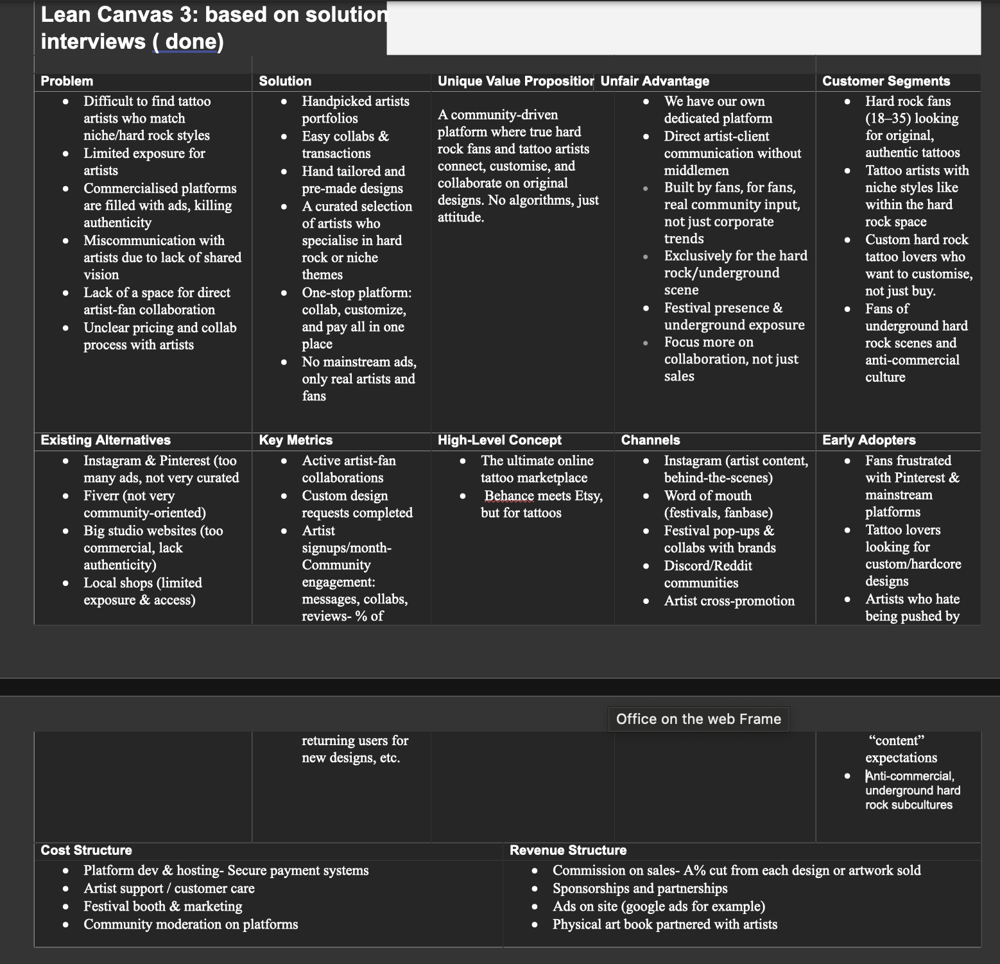

General Information
- Julia Kosińska (ID: 230737)
- Lowie Louwman (ID: 234817)
- Rada Mineva (ID: 232176)
- Elvira Moreno (ID: 230494)
Content
| # | Student ID | Value | Name and link of content |
|---|---|---|---|
| 1. | 230737 | Corporate | Corporate |
| 2. | 234817 | Catalogue | Catalogue |
| 3. | 232176 | About Us | About Us |
| 4. | 230494 | Home | Home |
Production
Design Elements
-
A colour scheme (with HTML colour codes, which must be consistent with your final website) see the example below from the BUas brand book:
- #272727 The off-black colour refers to Black is the main colour of hard rock. It represents darkness, mystery, death and is also the main colour of tattoos. It's edgy and keeps the tone of voice of the brand.
- #595959 Dark grey gives variety and depth without making the brand colourful. Hard rock culture usually lacks variety of colours and sticks to grayscale.
- #b21f24 Dark red is a strong accent to bring the website colour without straying away from the hard rock aesthetic. Dark red symbolizes passion and desire, it also suggests mystery and suspense. s…
- #f5f6f6 Off-white gives the website a professional look while not bothering the hard rock aesthetic. Creates visual balance and keeping the site from feeling too heavy.
- Font choices
- RUBIK DIRT: This font has a distressed aesthetic, that has the gritty, raw vibe of hard rock. The static-like texture gives a feeling of chaos, noise, and rebellion – all core elements of the genre. It also looks like something off a vintage rock gig poster.
- Road Rage looks handcrafted and chaotic. It's full of personality and energy. The brush stroke texture gives it a rebellious, expressive tone, giving it the DIY punk and garage rock influences often found in hard rock.
- User interface patterns
- 1: Grids – Grids provide structure that scales across devices, maintaining a consistent layout with responsive design
- 2 :Cards – Cards help structure information into scannable units, supporting the focus on clarity and content prioritization. They follow repetitive conventions, allowing users to quickly recognize content structures and interact with them. Our cards have buttons attached to it, t giveour users a clear CTA where to go to.
- 3 : Accordions - Accordions allow to surface relevant content progressively, reducing overwhelm and supporting a clean, minimal interface design. Navigation and content
- The structure of the navigation and content - Navigation bar – We tried to keep our navigation bar as clear and organised as possible. We used red for the buttons to draw attention to the different options. The navigation bar being dark grey keeps it in line with the brand aesthetic.
- With only three main pages (Home, Catalogue, About Us) we are embracing a lean information architecture. This keeps the user focused, reduces decision fatigue, and matches the bold, no-nonsense tone of rock culture. The Home page gets users into the feel and vibe of the brand and presents the main information about its purpose. Catalogue serves as the functional part of the website where users can browse and contact artists. Splitting 'About Us' into Events, Team, FAQ, and Contact reduces cognitive overload and keeps information structured. This supports the flow, and respect for user attention which is important when dealing with a target audience that is bold and expressive
-
- How does website design fit the marketing and communication strategy? The gritty visuals and font styles reflect a consistant tone of voice, raw, authentic and expressive. This makes our branding cohesive across visual and written content. Also our buttons are a straight CTA for our user, clear and simple. Attracting the visitor and guiding them without cluttering the brands aesthetic lean content architecture having only three core pages align with the "cut the crap marketing" strategy we have.
- How does website design help showcase the unique value proposal of the product? Our value lies in being a hub for hard rock inspired tattoo artists and fans,the the website showcases that through: Catalogue focused UX: The card based layout and minimal navigation prioritise the artist discovery and collaboration process, supporting our unique offering of creative connection.
Credits
Please provide links and/or credits for third-party elements including:
- The source code for Cards We used this for the catalogue and meet the team pages getbootstrap.com/docs for a list of such patterns):
- The source code for Accordion We used accordion on our homepage getbootstrap.com/accordion
- The source code for Form controls We used this for our artist contact page and general contact getbootstrap.com/docs
- The source code for Images We used these throughout our website, so the homepage, artist page and contact page getbootstrap.com/docs
- Credits for Images We used these throughout our website, so the homepage, artist page and contact page onedrive images sources
- Credits for Rubick Dirt static google font We used these throughout our website, so the homepage, artist page and contact page RUBIK DIRT FONT
- Credits for Road rage font We used these throughout our website, so the homepage, artist page and contact page ROADRAGEFONT
- Credits for all images we used:
- Image credits
Testing Report
Please write about…
- Your testing goals – in other words, what you are trying to learn about your website?
- Your testing methods, which includes information about:
- The test’s participants (number, match with target audience, etc.)
- The test’s setting (which material is used, is it done remotely, on campus, at home, etc.)
- The test’s protocol (what instructions are given, how it is recorded, etc.)
- Your testing results, which includes information about:
- Positive and negative aspects of the UI/UX that have been identified, ranked by importance.
- Improvements that have been implemented on the final website (or that would be implemented if doing so would be too complex)
Marketing
Context of campaign and promotional activities
Introduction
Hello there! We are Needles & Noise. Our work is shaped by sound, stories, and the edge where art meets identity. This report dives into the heart of our latest marketing campaign, built to resonate with hard rock fans who live loud and wear their stories on their skin. At our core, it’s all about authenticity — no trends, no posers, just raw, unapologetic self-expression. This is more than tattooing; it’s a community where every line tells a legend.
Campaign
The aim of our campaign is to increase awareness of our brand and the services we offer. We also put a lot of emphasis on engagement, which is why the content we provide is designed for this purpose.
Target audience
Our target group are people between the ages of 18 to 35 years old, that are metal and hard rock fans based in Noord-Brabant. Either have tattoos or are planning to get tattoos. They purchase from small businesses and want to support small artists. They rarely use TikTok and mostly use Instagram. to follow artists and festivals. They engage with carousel posts, reels and stories especially with concert clips and tattoos. They search for inspiration for tattoos on Pinterest. They regularly visit hard-rock festivals and concerts. Our target audience tends to interact with brands and artists that are grounded in authenticity and community. They value creators who are passionate and original and have their own way of expressing their character through their designs. They prefer content that feels real and authentic over precisely prepared advertising. Strong engagement is often seen with relatable content. They share or repost when they feel connected to a message. Mostly if it supports underground culture. Our target audience thrives on visual content, videos, photos, reels. They are drawn to storytelling around the artist and their art; healed tattoos, gothic linework, blackwork, progress shots of tattooing. The best time to reach them are evenings on weekdays and late mornings and nights during the weekend.
Objectives
The objective set for the marketing campaign of Needles & Noise are as followed:
Reach objective: By 30th of April 2025 we aim to reach 500 users on Instagram who like hard rock music and have interest in tattoos
Affect Objective: To inspire and excite our users to get a new tattoo through hard-rock specific content .This will be measured by increased interactions (including likes, follows, and other forms of engagement), with the goal of achieving a total of 250 interactions across all posts by April 30th, 2025.
Response Objective: By April 30th, 2025, we aim to gain 30 followers and generate 10 clicks, guiding users to our website where they can connect with tattoo artists and explore rock-inspired tattoo ideas.
Keep in mind that it will only have results for the first 4 weeks, we decided on setting small goals as our niche is quite small and we wanted to set something that was achievable yet could give us an overview. Also since it was a first time we wanted to keep the goals as realistic as possible.
Channels
For the channels we decide on using Instagram, Instagram is one of the most used social media platforms in the Netherlands as almost 59% of Dutch people use Instagram (Statista, 2025). Not only this but with our target audience of 18-35 years olds have the highest distribution which account to a combined 51.1% as of January of 2025(Statista, 2025). More specifically for Rock Fans according to our interviews which insight can be found here (link of interview insight) it was commonly agreed that they all use Instagram as a platform. This can confirm that instagram will be where we can target and reach our audience the best making it the ideal channel.
Instagram also supports our communication goals;
- For our reach objective, Instagram's algorithm and the discovery features (such as reels and hashtags) help us to reach users from a starting account. Especially since hashtags can reach those who's interested is both hard rock and tattoos. (Demeku, 2025)
- For our effect objective, since Instagram is very visual it allows for us to create engaging post that can follow the rock aesthetics, helping us align and create excitement and inspiration on using our platform to get a new tattoo.
- For our response objective, Instagram allows for links to be added in our bio since we decide on using link tree it allows for the users to click our link in bio.
Instagram allows also for a mix of different content which we can then use to support our strategy
- Reels can allow us to create more reach and attract new users through the explore page
- Image post and carousel can be used to spread information on our platform and the value it can bring to the audience
Having this combination can allow for a consistent visual identity that will allow us to reach different types of engagement helping us reach our overall goals in our campaign.
Learning Points
Reflection
Week 1 (17.03.25 - 23.03.25)
Instagram Statistics
| Accounts Reached | 144 |
|---|---|
| Accounts Engaged | 9 |
| Content Interactions | 16 |
| Profile Visits | 65 |
| Clics on Link | 0 |
| Number of Post | 2 |
In Week 1, we focused on introducing our platform and explaining what Needles & Noise is about. At this stage, our Linktree was not yet set up, which explains why link clicks remained at zero. We only shared static posts this week, with no additional content formats. While there were no major surprises, we were impressed by the number of profile visits, which suggested that people were curious and interested, even if they didn’t engage through likes. We also tried experimenting with posting times and hashtags when in this week we decided on more niche hashtags. This insight encouraged us to think about how we could make our content more engaging and action-oriented in the following weeks.
Week 2 (24.03.25 - 30.03.25)
Instagram Statistics
| Accounts Reached | 403 |
|---|---|
| Accounts Engaged | 26 |
| Content Interactions | 50 |
| Profile Visits | 131 |
| Clicks on Link | 2 |
| Number of Post | 4 |
In Week 2, we introduced reels into our content strategy, which significantly boosted our performance. The inclusion of reels led to a noticeable increase in both reach and profile visits, with our account reaching over 400 users and generating 131 profile visits. This week also marked our first link clicks, showing progress toward our response objective. The positive impact of reels became clear, and we decided to prioritize them more in future weeks. Additionally, we surpassed our initial reach objective by the end of this week, demonstrating early momentum in our campaign.One reason why is because we started mixing broad and specific hashtags to target the right audience.
Week 3 (31.03.25 - 06.04.25)
Instagram Statistics
| Accounts Reached | 625 |
|---|---|
| Accounts Engaged | 23 |
| Content Interactions | 54 |
| Profile Visits | 60 |
| Clicks on Link | 1 |
| Number of Post | 4 |
In Week 3, we built on the strategy from Week 2 by continuing to focus on reels, with 3 out of 4 posts being video content. This approach helped us reach 222 more accounts compared to the previous week. However, despite the higher reach, we saw a noticeable drop in profile visits and accounts engaged, which suggests that while more people saw our content, fewer were motivated to take further action. We observed a slight increase in content interactions, which may be linked to our shift toward funny and relatable content. This type of content seemed to resonate more with the audience on a surface level, sparking more engagement with the posts themselves. We also experimented with call-to-action strategies, such as encouraging users to click our link, but this only resulted in one click during the week. Additionally, we began testing different posting times and noticed that a post shared at 1 PM performed better in terms of engagement, a helpful insight for future scheduling.
Week 4 (31.03.25 - 06.04.25) Instagram Statistics
Instagram Statistics
| Accounts Reached | 403 |
|---|---|
| Accounts Engaged | 14 |
| Content Interactions | 29 |
| Profile Visits | 30 |
| Clicks on Link | 5 |
| Number of Post | 3 |
In Week 4, we shifted toward more informational carousel posts, while still including one reel with a humorous tone to maintain variety. Although we posted slightly less than in previous weeks, we saw a significant increase in link clicks, reaching a total of 5. This improvement likely came from clearly directing users to our Linktree in the captions and aligning all content with that goal. Interestingly, our text-based, informative posts appeared to drive more website traffic, even if they were slightly less visually engaging. Our intent this week was to clearly explain what our platform offers, even if it meant sacrificing a bit of entertainment value. We also experimented with a “Fact or Myth” post to encourage comments and discussion. However, it received no comments, highlighting a continued challenge with generating deeper engagement. Despite that, we hit 63 followers by the end of the campaign more than double our original target in the response objective, which was a major success. While we achieved a high reach early on, we fell short of meeting our affect and response objectives. This highlighted that while reaching users wasn’t an issue, generating the desired level of engagement and action was. We ended up with 149 interactions and 8 link clicks, which was just shy of our goals. However, we don’t consider the campaign a failure. Building a brand in such a short time is challenging and from these small setbacks from our goals we look to improve and refine our strategy moving forward.
Takebacks
During these 4 weeks, there was a lot of experimenting with different hashtags, post times, and types of posts. What I learned was that a mix of broad and niche-specific hashtags works best for reaching a wider audience. In Week 2, after we tried this approach, we saw a significant increase in reach, with no post reaching fewer than 400 views. We also learned the importance of posting times. While our initial insights suggested otherwise, we found that posting during the day—particularly around lunchtime—led to higher views and likes. After doing some research, we discovered that people often check Instagram during lunch breaks, which could explain this trend (Mathur, 2025).
Another key takeaway was that funny posts performed best. Although we used templates that may not have resonated with rock fans, the engagement indicated otherwise. On the flip side, posts that encouraged interaction, like asking people to leave comments, performed poorly. This could be because we didn’t have a strong follower base that consistently engaged, which made these posts underperform. We also noticed that posts with only one photo, as opposed to carousels, lacked engagement, likely because they were plain and didn’t offer enough value. Reels, of course, were the content that achieved the best results, likely due to their higher chances of appearing on the Explore page. Additionally, using popular audio tracks helped our reels get more exposure. We had expected our educational posts about what our platform offers to perform better, as we felt our target audience would be more interested in understanding the value we provide, rather than just being shown something entertaining. However, we realized that our assumption was incorrect, and these posts didn’t perform as well as anticipated. We also had a post where we thought viewers would be excited to spotlight their work. Unfortunately, that post didn’t perform well, and it made us realize that the audience didn’t respond as we expected. One important lesson was the need to find better ways to direct users to our link. Since the link was mostly located at the bottom of posts with the "Click link in bio" call-to-action, people may have missed it or didn’t scroll down far enough. Moving forward, we’d experiment with making the link more prominent so that it stands out.
If we could do things differently, we would implement reels earlier in the campaign. We feel that reels were an excellent tool for reach, and we could have adapted them more effectively to drive more link clicks. Maybe making these reels with popular videos in the niche of Rock Fans. Additionally, posting consistently during the 1-3 PM window, when we saw higher engagement, would be a priority. Lastly, in terms of the frequency of posts, we’d experiment with posting stories, especially if we manage to grow a larger follower base. Also posting consistently and not whenever we could maybe have reached us higher results which is something we would implement in the future.
Future Planning
If the project were to continue, several changes would be made. The target audience would stay the same; however, we feel that conducting more research into the types of content they engage with most and how they use Instagram would help us better tailor our approach. More consistency in posting days would also be important, meaning that our communication and media calendar would need to be developed further. During the first 4 weeks, only 14 pieces of content were posted, which averages to about 3.5 posts per week. While this meets the minimum Instagram recommendation of 3–5 posts per week, the inconsistency—some weeks having more posts than others—could have negatively impacted engagement. Instagram also suggests posting one story per day, as stories help boost interaction (How Often You Should Post on Instagram in 2025, 2025). This is something the team didn't do, and in hindsight, it could have supported our engagement goals significantly. In addition to how much we posted, when we posted also played aA new communication plan has been created as an example of the different media types we should post,what times and dates which can be later used as inspiration or reference for the second part of the campaign (Insert link here) role. According to research, the best days and times to post are Monday through Thursday from 10 AM to 3 PM—a timeframe we didn’t consistently follow (Keutelian, 2025). For future planning, aligning posts with these time slots could help us reach peak engagement.In terms of content itself, our funny posts performed best, so this style should definitely be carried forward. Creative content, such as behind-the-scenes with artists showing how they design tattoos, could also boost engagement. This would resonate well with rock fans, who often value authenticity and creativity (Statista, 2025). Another clear issue was our lack of comments and shares, which are key indicators of engagement. To encourage this, we suggest implementing Instagram-exclusive giveaways. For example, offering a chance to win a free tattoo session with one of our artists could create buzz and encourage followers to share the post—expanding our reach and interaction (Keefe, 2024).
To evaluate whether these changes would be effective, new objectives should be set, building on what we've learned from this campaign. These recommendations are directly influenced by our past experience and are aimed at improving performance in future campaigns:
Detail and describe clearly the process of what your would do differently based on you experience on this project related to the marketing assignment.
Reach Objective: By the 31st of December 2025 we aim to reach 10,000 users who like hard rock and have an interest in tattoos
Affect objective: To inspire and excite our users to get a new tattoo through hard-rock specific content .This will be measured by increased interactions (including likes, comment, and other forms of engagement), with the goal of achieving a total of 1,050 interactions across all posts by December 31st, 2025.
Response Objective: By December 31st, 2025, we aim to gain 500 followers and generate 100 clicks, guiding users to our website where they can connect with tattoo artists and explore rock-inspired tattoo ideas.
Although the affect objective's main goal was not changed as it reflects what our brand wants to do however the number of interactions was modified to better align with projected outcomes based on content performance and realistic expectations drawn from the first part of the campaign. It’s important to note that if any of the objectives are reached before December 31st, 2025, setting new ones would be reasonable since these objectives are influenced by the insights gained from the initial 4 weeks.
Professionalism
We tried as much as possible to stick to the brand image, colors, and fonts throughout the posts. Although there were some inconsistencies in the color scheme at the beginning, this was quickly resolved. The issue occurred due to a color setting mismatch—one person had their files set to RGB, while the rest of the posts used CMYK. Once we identified the problem, we corrected it to ensure brand consistency.
Another source of inconsistency came from our reels. As explained in our communication plan (insert link) , the reels were primarily designed for engagement purposes. Initially, we did not hide these reels from our main feed, which made our homepage appear visually inconsistent. This was especially noticeable because the reels featured figures like Kris Jenner, IShowSpeed, and Ross Geller—individuals who, we later realized, didn’t resonate with our target audience. It’s important to clarify, as also mentioned in our communication plan, that these reels were based on popular Instagram templates that we adapted to communicate our own message. The figures shown were not the focus of the content, which is why they were never mentioned in captions. However, since these reels were important for increasing engagement and reaching our reach objective, we chose to keep them—just not on the homepage. We moved them to the Reels tab instead, which allowed the main feed to look more visually cohesive and aligned with our brand identity.
To stay responsive to trends, none of our posts or reels were created too far in advance. This flexibility allowed us to act quickly on any trending content that could increase reach. While we did face some inconsistency at times, we always made sure to either hide, correct, or adjust the visuals so that our overall look stayed on the right track.
All of our Instagram posts can be found at: @needles.and.noise
Or via the lin: https://www.instagram.com/needles.and.noise/
As mentioned above regarding the use of well-known figures in certain templates, the same justification applies across our posts. These explanations focus on visual choices and captions (e.g., call-to-action strategy), while the hashtag decisions are addressed in the learning points section.
Management
Lean Canvas
We did 3 versions of the lean canvas. The other 2 with justifications can be found in the appendix below, only the third one will be listed here.
Problem
- Difficulty finding tattoo artists in niche styles. In our solution interviews, we discovered that many people interested in tattoos, especially within the hard rock scene, encounter challenges when trying to find an artist who understands their specific preferences. Most mainstream platforms tend to focus on popular trends or designs, overlooking the unique and grittier styles inspired by hard rock culture. This disconnect between our target audience and available options results in frustration for hard rock fans seeking artwork that genuinely reflects their identity, rather than conforming to mainstream trends. Another problem we found during the interviews was that fans who seek desigs often have to travel all the way for tattoo shops to talk over a design they want, what could be an inconvenience.
- Limited artist exposure and oversaturation of ads The artists working in niche subcultures often struggle to gain visibility for their work. Platforms like Instagram and Pinterest are oversaturated and algorithm -driven, making it hard for new artists to stand out without paying for exposure or ads. This commercialisation undermines both the reach and the platforms authenticity.
- Miscommunication and lack of transparency in collaboration Another issue we observed during our interviews was the difficulty in communicating vision and style between clients and artists. Additionally, unclear pricing structures and timelines often create friction in the commissioning process.
Solution
- Handpicked artist portfolios In Lean Canvas 2 we already planned to showcase artist portfolios, but after interviewing hard rock fans who seek tattoo designs, we narrowed the focus. Many interviewees emphasised frustration with generic or mainstream tattoo options, often not fitting their identity as hard rock fans. We decided to only feature artists who specialise in hard rock designs, directly solving the unclear process of finding the right artist for the right value, want or need a user could have.
- Easy collaboration process and transactions We specialise in fostering seamless communication between artists and customers through direct messaging, creating a more personalised and efficient experience. Our platform features an organised and visually appealing design catalogue, allowing users to browse and discover unique tattoo concepts with ease, which our interviewees stated was a very difficult thing to do. To enhance security and build trust, we implement comprehensive payment solutions that safeguard transactions and eliminate the risk of miscommunication. Moreover, we recognise the challenges we talked over with our target audience faces when seeking a specific tattoo design, often having to travel to various shops for consultations, which can be both time-consuming and inconvenient. Our service aims to remove those barriers, making it simple for enthusiasts to connect with artists and explore design options from the comfort of their own homes.
- Hand-tailored and pre-made designs Our platform offers users the unique opportunity to collaborate directly with talented artists to create custom artwork tailored to their specific vision. This was not our initial idea, but from insights from our interviews, we implemented this idea. Whether it's a personalised piece that reflects their individual style or a functional design that suits their space, the collaboration process ensures that every detail is thoughtfully considered for them. Additionally, for those who prefer a more immediate solution, we provide an extensive selection of pre-made designs across various styles and themes. This range guarantees flexibility, catering to different preferences and budgets, making it easy for users to find the perfect art solution that meets their needs.
Customer segments
- Our customer segment contains hard rock fans who seek for tattoo designs aged 18-35 years old. These users seek designs that are not commercial and represent themselves and their culture authentically. Why this age range? That’s because according to (spy global) these users who are mostly GenZ and Millennials, spend a lot of time online and on social media in general. Secondly, the artists who align themselves with subcultures within the hard rock space and feel excluded from commercial platforms or struggle to gain exposure for their work. For more details, we included the persona. Our refined customer segments are no longer based on assumption but with real talks and insights from hard rock lovers and hard rock bands. And for the rock fans who are interested in tattoos we did some research to see if the stereotype is true. Some research that was available shows that the most popular tattoos are among rock fans. Research from a Lickd study shows that from the top 20 most popular tattoos of all genres, all 15 came from hard rock bands or musicians. (Lickd, 2024) We also focus on people living in Noord-Brabant in The Netherlands. By doing so we can build a strong reputation within the local hard rock community before expanding to other areas.
- Early Adopters: Our early adopters are not just casual fans, they are individuals who are deeply embedded in hard rock culture and frustrated with the current available options. These fans are eager for something authentic and community-driven. They are tired of mainstream platforms like Pinterest and are seeking alternatives. Tattoo lovers want custom, hardcore designs, while artists are discontent with being pressured by “content” expectations. We aim to serve the anti-commercial, underground hard rock subcultures.
- Brand persona. Emma and Lars represent our ideal personas, both of whom fall within our target demographic of 18 to 35 years old. They both value authenticity and fair business practices. Additionally, they dislike the corporate, profit-driven nature of the hard rock scene and seek a refreshing new brand that truly understands them. Furthermore, they support and appreciate brands that care about underground and emerging tattoo artists. They both are from the Netherlands, which makes them easy to reach. We are sure our solution appeals to similar people who seek authenticity and creativity. Down here there is a broader explanation of our brand persona:


Unique value proposition
- Unlike mainstream platforms that prioritise algorithms and paid promoting, our platform is a community-driven space designed for genuine collaboration on tattoo designs. Through insights gathered from our solution interviews, we have refined our unique value proposition (UVP): our platform connects true hard rock fans and artists for the purpose of customising and collaborating on original designs. There are no algorithms or paywalls, just attitude. Our UVP emphasises both the emotional and functional value of our website, fostering an environment for self-expression, authenticity, and artist connections in a space that resists commercialisation.
Unfair advantage
- What sets us apart is our deep cultural alignment with the underground hard rock scene, something the mainstream platforms overlook. We are not just another marketplace, we are building a tight-knit community, by fans and for fans, with real input from people who actually live this lifestyle. Unlike generic art or tattoo platforms that rely on their content algorithms, we focus on authenticity, collaboration and direct artist-to-fan connections. There is no middleman, no gatekeepers and no pressure to perform or get the most likes for the mainstream. Also, our festival presence and underground exposure allow us to get into places others don’t even look, where passionate fans and artists meet organically. This gives us access to artists and customers that other platforms cannot reach, building credibility for ourselves and loyalty from the start.
Channels
- After interviewing potential users for our platform and researching our marketing and reach strategies, we selected the following high-impact channels. Instagram for showcasing artist content, like behind-the-scenes sketches and fan submissions. Secondly word-of-mouth via festivals as pop-ups at rock festivals and artist booths. Thirdly our discord and Reddit channels where we build a community and organic discussions in niche subreddits channels and servers. And lastly artist-cross promotion. Leveraging each artist's following for mutual exposure. These channels were also chosen based on the preferences of our target audience.
Key metrics
- To measure from these channels we chose a few key metrics to track our success. Number of artist-fan collaborations per month. Custom design requests completed. Monthly artist sign-up. Community engagement, like messages, collaborations and reviews. Returning viewers for new designs or follow-up tattoos with the artist.
- Tracking these metrics will help us fine-tune both platform usability and customer satisfaction
Revenue streams
- Lastly, good to know how we pay our bills. We made some very simple calculation to show how we make money, not expected sales or anything, just for showcase.
- Commission on sales, if we hypothetically have 100 artists on our platform and if each artist makes around €150 a month that's €1800 a year. We take 20% commission not from the artist but on the costs of the buyer, so our values we promised are still present. That would earn us €36000 a year.
- Sponsorships and partnerships: assumption of 4-5 sponsors at €5000-€10000 a year. That makes it €50000 a year
- Ad revenue: if we have between 1.5m- 10m people visiting our website, we could earn between €3000-€20000 a month.( nextMillennium 2023)
- Premium membership: like early access to new artist drops, premium artist support or exclusive community perks. So if we have 300 paying customers a month and we charge a €5 membership cost per month that would be €18000 a year.
- Physical art book sales: if we sell 500 exclusive books a year priced at €30 euros in collaboration with designs from our artists. The book costs will be €10 euros a book (Mczell_Blog, 2024). So that's 20x500=€10.000 a year.
- So with these revenues, we will earn about €234.000 a year, so a good profit to invest further in our platform and users.
- sources for these numbers can be found in the management folder down here.
- Onedrive management sources
Cost structure
- Our projected costs reflect a lean startup phase focused on tech, community and marketing. So that will include: Platform development and hosting costs, a secure payment system integration in our platform Festival booths and artist promotion Community moderation and support team available, Marketing across social and event channels, then the occupation cost salary to keep our brand running.
- First: Fixed costs: Web Developers average salary in the Netherlands €3500 a month, so that makes it €42000 a year (Glass Door 2025) Marketing specialist: average salary €4000 a month, so that makes it €48000 a year. (Glass Door 2025) Community manager: average salary €3000 a month, makes it €36000 a year (Glass Door 2025) Payment system and support: salary average €2770 a month, which makes it €33,240 a year (Glass Door 2025) Festival booth and expenses: our budget for a medium stand €15000 a year Server costs, €38 a month so around 450 euros a year for budget hosting (HostSailor). So total costs: €174.690 for one year
- Variable costs: Transaction fees on the site (like stripe) this will be around 2€ of each sale Festival and travel accommodation during the festival. If we hire the medium stand and have 3 people volunteering there, we pay their accommodation. For 3 people, including food and accommodation, this will cost on average for Airbnb 218€ a night. Mostly festivals are 2-5 days so depending on that it will cost us a max of €1100 euros for a festival. Food for 3 people will be 100 euros a day. So around €500 euros per event. If we do 10 hard rock events a year it will cost us a total of €16000 Variable costs a year. So our total variable and fixed costs will be €190.690
- Cost per unit: Total yearly costs fixed+variable. Total projected collaborations or sales in year 1= 10.000 sold. We do Total costs/number of units= €17,42
- All sources can be found in our management one-drive folder down here.
- Onedrive management sources
Services/products
- We are Needles&Noise, a curated online platform where underground tattoo culture and hard rock meet each other. We offer space for fans and artists to connect, collaborate and create custom tattoos without the disruption of mainstream platforms. Our mission is to keep an authentic spirit of creativity and hard rock alive through connection with ink. We have a curated selection of artists who specialise in hard rock tattoos with no commercial trend designs. Fans can easily co-create designs with these artists to match their vision on their next tattoo. No communication gaps, just pure creativity. There is no middleman. Artists and fans talk directly, collaborate and build the platform together. Our mission is to support real connections, no content algorithms or trends. Fans can directly request a commission through the artist's profile with secure payment and good communication all in one single space. We are also active at festival stands, promoting the work of smaller artists and connecting them to fans. Needles&Noise is a brand against the ordinary, against the mainstream and trends. Built by fans, for fans!
Validation of Assumptions
After conducting multiple interviews with hard rock fans who are interested in tattoos, we found key frustrations, desires and unmet needs they could not get from other platforms. These findings shaped our final idea of a community-driven, niche hard rock tattoo space that emphasises authenticity, artist collaboration and an anti-commercialisation movement. We did 3 versions of the lean canvas, and all these interviews led to these final changes.
What was improved? Problem: Our interviewees said that there is a lack of niche-focused designs( hard rock, metal) We understood from our interviews that platforms like Instagram and Pinterest are too commercial and overloaded with ads. Platforms feel over-commercialised, decreasing authenticity Artists who do not share customer values or vision created frustration with our interviewees on platforms. They were confused about where to go and how to contact them. We updated the problem after the last interviews, why a disconnection between artists and client communication for personalised design occurs.
UVP We changed our UVP after our interviews, to a more curated UVP based on what we heard. So a platform built by and for the hard rock community where fans and artists collaborate on authentic anti-commercial designs. The anti-commercial was a recurring theme In our interviews, which is why we focused extra on that problem.
Solution We expanded our solution after our interviews based on a few reasons. Firstly, users want to collaborate on custom designs rather than just choose available generic options. Secondly, direct interaction is critical for our users. Lastly, after our interview findings, we concluded that transparency in pricing and artist alignment is essential for our platform. We all updated them based on their recommendations. We also updated some solutions from our previous findings. There were no platforms that offered handpicked artist portfolios specialising in their niche styles, like punk or metal. Also, our interviewees stated that there were no collaborative tools available to co-create tattoos. Only at the location, so a tattoo shop, which was inconvenient for some interviewees. We updated the problems of untransparency to a more upfront and transparent pricing, so the users would directly know if the tattoo would fit in their budget. An update to create a clear way to connect based on shared values and aesthetics of user and artist.
Customer segment We found in our interviews that most fans would fit in our target audience 18-35. We went deep into what they value as hard rock fans and developed a more detailed customer segment. They value authenticity and creative control, and they reject mass-market aesthetics and commercial branding. Some interviewees were particularly against the latter. We found that our interviewees were keen to support small and upcoming artists rather than third-party designs.
Before we did problem interviews for our second lean canvas, we drew a lot of assumptions from our own experiences, forums and discussions online. We found in those forums that community and brotherhood was one of the most important things they valued. We based our idea of tattoo designs on sources that hard rock fans on average have more tattoos (Lickd, 2024). Through this, we created our canvas around the idea of creating a space for easy tattoo design and purchasing since there were no platforms that did that. However, after doing more in-depth interviews, we discovered deeper emotional and cultural needs and wants then we thought at first. People weren’t just looking for tattoo designs to buy, they were looking for a sense of belonging and artistic authenticity through tattoos. Many interviewees stated that there is frustration with current options for being too commercial (Fiverr), too broad (Pinterest) or too disconnected like local shops in the areas. Our assumption that fans wanted better access to tattoos was only partly true. We noticed the real insight was that our interviewees wanted to avoid commercialised, trend-driven platforms and instead connect in a more community-driven space made specifically for hard rock fans.
Based on this feedback given to us, we update our UVP not to just offer access, but to really curate the experience and feeling. Giving fans an authentic and raw platform that felt true to their view instead of a commercialised platform. During the solution interviews, we did after refining our second lean canvas, we presented these new ideas mentioned above, and they were received positively. Several interviewees really emphasised that having a platform that really gets to the point and directly connects them to to artist with their preferred style would be a game changer. One of the biggest changes we made based on the interviews was refining the collaboration process. We originally had assumed that simply showcasing tattoo designs was just enough. However, our interviewees stated that consultations and communication with artists were just as important, currently absent on many platforms. As a result of that, our solution now prioritises easy artist-client messaging, a secure payment that causes no confusion and a smoother discovery of new fresh and custom tattoo designs. These insights were filled in into our third lean canvas, where the problem, solutions, UVP and customer segments were edited by real voices of the hard rock community. Our assumptions shifted from “just a marketplace” to a “community and culture first platform.”
Alternatives considered In our pre-study research, we discovered that during our solution interviews, many participants pointed out that existing platforms for finding tattoo artists do not adequately meet their wants and needs. Specifically, there is a lack of authenticity, community, and collaboration among these platforms.
Currently, Instagram and Pinterest serve as popular sources for tattoo inspiration; however, our interviewees described them as overly commercial and driven by algorithms. The constant ads and paywalls make it challenging to discover genuine or niche tattoo designs. Additionally, these platforms do not facilitate collaboration, communication, or secure payments. Another example is Fiverr, a platform featuring freelance artists, including those who specialise in tattoo designs. However, many see it as a gig economy platform rather than a creative community focused on collaboration. Interviewees noted that it feels impersonal and too corporate. Local tattoo shops may appeal to some people for their neighbourhood charm, but accessibility is limited by location and shared aesthetic preferences. Often, these shops lack online visibility and do not offer opportunities for digital collaboration or commissions. So there is no central, curated place where artists and hard rock fans can find each other. That is exactly the gap our fills.
Throughout the whole brand development process, we researched other existing alternatives: Pinterest and Instagram are filled with inspiration, but lack structure, artist filters and direct artist communication options. Fiverr is made for free-lance designs but is perceived as too commercial, soulless and not tattoo-specific enough. Local tattoo shops often have outdated or no actual online presence, requiring people to travel to their shops, which in some cases could be a hassle.
Conclusion Our interviews throughout this project really showed us that none of these platforms met the expectations of both artists and users expectations like authentic alignment and easy access to niche tattoo designs. That's why Needles&Noise fits in, as a curated, understanding and real space that bridges the gap between artists and hard rock fans. By actively listening to our target audience, we have built something that speaks directly to hard rock fans and artists who are looking for a place to belong and create!
Appendix
Our files, link and sources are all sorted in our Onedrive down below.